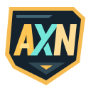

<!doctype html><html lang="es"><meta charset="utf-8"><meta name="viewport" content="width=device-width, initial-scale=1"><meta name="theme-color" content="#101418"><title>Sin conexión · WOOFIA XXL</title><link rel="stylesheet" href="./assets/design.css"><main style="max-width:35rem;margin:16vh auto"><span class="wordmark">WOOFIA <b>XXL</b></span><h1>Estás sin conexión</h1><p>Volvé a conectarte para ver la ronda actual y registrar tu elección.</p><button onclick="location.reload()">Volver a intentar</button></main><script>let checking = false;
async function reconnect() {
  if (checking || !navigator.onLine) return;
  checking = true;
  try {
    const response = await fetch(location.href,{method:'HEAD',cache:'no-store'});
    if (response.ok) location.reload();
  } catch {} finally { checking = false; }
}
window.addEventListener('online',reconnect);
document.addEventListener('visibilitychange',()=>{if(!document.hidden) reconnect();});
setInterval(reconnect,4000);</script></html>
